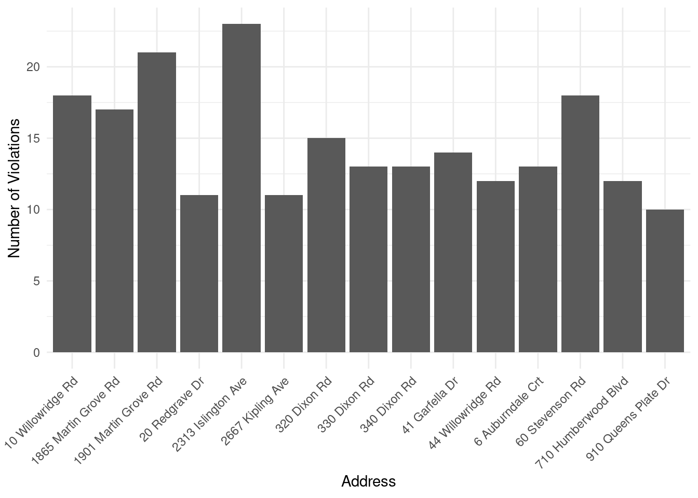

#### Preamble ####
# Purpose:
# Author: Jessica Im
# Email: jessica.im@mail.utoronto.ca
# Date: 1 July 2022Highrises with 10 or more fire inspection violations in Ward 1
Abstract
My abstract.
library(opendatatoronto)
library(dplyr)
Attaching package: 'dplyr'The following objects are masked from 'package:stats':
filter, lagThe following objects are masked from 'package:base':
intersect, setdiff, setequal, unionlibrary(tidyverse)── Attaching core tidyverse packages ──────────────────────── tidyverse 2.0.0 ──
✔ forcats 1.0.0 ✔ readr 2.1.5
✔ ggplot2 3.4.4 ✔ stringr 1.5.1
✔ lubridate 1.9.3 ✔ tibble 3.2.1
✔ purrr 1.0.2 ✔ tidyr 1.3.0── Conflicts ────────────────────────────────────────── tidyverse_conflicts() ──
✖ dplyr::filter() masks stats::filter()
✖ dplyr::lag() masks stats::lag()
ℹ Use the conflicted package (<http://conflicted.r-lib.org/>) to force all conflicts to become errorslibrary(knitr)
library(janitor)
Attaching package: 'janitor'
The following objects are masked from 'package:stats':
chisq.test, fisher.testlibrary(lubridate)library(usethis)
Attaching package: 'usethis'The following object is masked from 'package:opendatatoronto':
browse_packagelibrary(gitcreds)#### Acquire ####
package <- show_package("f816b362-778a-4480-b9ed-9b240e0fe9c2")
package# A tibble: 1 × 11
title id topics civic_issues publisher excerpt dataset_category
<chr> <chr> <chr> <chr> <chr> <chr> <chr>
1 Highrise Residen… f816… Publi… <NA> Fire Ser… Listin… Table
# ℹ 4 more variables: num_resources <int>, formats <chr>, refresh_rate <chr>,
# last_refreshed <date>resources <- list_package_resources("f816b362-778a-4480-b9ed-9b240e0fe9c2")
datastore_resources <- filter(resources, tolower(format) %in% c('csv', 'geojson'))
highrise_fire_inspection_data <- filter(datastore_resources, row_number()==1) %>% get_resource()
highrise_fire_inspection_data# A tibble: 32,000 × 13
`_id` PropertyAddress ADDRESS_NUMBER ADDRESS_NAME Enforcement_Proceedi…¹
<int> <chr> <chr> <chr> <chr>
1 1 75 Tandridge Cres 75 Tandridge No
2 2 108 Goodwood Park C… 108 Goodwood Pa… No
3 3 33 Gabian Way 33 Gabian No
4 4 935 Sheppard Ave W 935 Sheppard No
5 5 88 Alton Towers Crcl 88 Alton Towers No
6 6 39 Old Mill Rd 39 Old Mill No
7 7 25 Thunder Grv 25 Thunder No
8 8 25 Thunder Grv 25 Thunder No
9 9 25 Thunder Grv 25 Thunder No
10 10 2755 Jane St 2755 Jane No
# ℹ 31,990 more rows
# ℹ abbreviated name: ¹Enforcement_Proceedings
# ℹ 8 more variables: PropertyType <chr>, propertyWard <chr>,
# InspectionThread <chr>, INSPECTIONS_OPENDATE <chr>,
# INSPECTIONS_CLOSEDDATE <chr>, VIOLATION_FIRE_CODE <chr>,
# VIOLATIONS_ITEM_NUMBER <chr>, VIOLATION_DESCRIPTION <chr>#### Clean ####
highrise_fire_inspection_clean <-
clean_names(highrise_fire_inspection_data)|>
drop_na(violation_fire_code) |>
filter(property_ward == "01") |>
select(property_address)
head(highrise_fire_inspection_clean)# A tibble: 6 × 1
property_address
<chr>
1 60 Stevenson Rd
2 60 Stevenson Rd
3 60 Stevenson Rd
4 60 Stevenson Rd
5 2765 Islington Ave
6 2737 Kipling Ave # Create a number of violations variable
highrise_fire_inspection_clean <-
highrise_fire_inspection_clean |>
group_by(property_address) |>
mutate(number_of_violations = n())
# Filter for 10 or more violations
highrise_fire_inspection_clean <-
highrise_fire_inspection_clean |>
filter(number_of_violations >= 10)
head(highrise_fire_inspection_clean)# A tibble: 6 × 2
# Groups: property_address [2]
property_address number_of_violations
<chr> <int>
1 60 Stevenson Rd 18
2 60 Stevenson Rd 18
3 60 Stevenson Rd 18
4 60 Stevenson Rd 18
5 44 Willowridge Rd 12
6 44 Willowridge Rd 12write_csv(
x = highrise_fire_inspection_clean,
file = "highrise_fire_inspection.csv"
)#### Explore ####
highrise_fire_inspection_clean <-
read_csv(
"highrise_fire_inspection.csv",
show_col_types = FALSE
)
highrise_fire_inspection_clean |>
ggplot(aes(x = property_address)) +
geom_bar() +
theme_minimal() +
labs(x = "Address", y = "Number of Violations") +
theme(axis.text.x = element_text(angle = 45, hjust = 1)) 
References
write_bib()@Manual{R-base,
title = {R: A Language and Environment for Statistical Computing},
author = {{R Core Team}},
organization = {R Foundation for Statistical Computing},
address = {Vienna, Austria},
year = {2023},
url = {https://www.R-project.org/},
}
@Manual{R-dplyr,
title = {dplyr: A Grammar of Data Manipulation},
author = {Hadley Wickham and Romain François and Lionel Henry and Kirill Müller and Davis Vaughan},
year = {2023},
note = {R package version 1.1.4},
url = {https://dplyr.tidyverse.org},
}
@Manual{R-forcats,
title = {forcats: Tools for Working with Categorical Variables (Factors)},
author = {Hadley Wickham},
year = {2023},
note = {R package version 1.0.0,
https://github.com/tidyverse/forcats},
url = {https://forcats.tidyverse.org/},
}
@Manual{R-ggplot2,
title = {ggplot2: Create Elegant Data Visualisations Using the Grammar of Graphics},
author = {Hadley Wickham and Winston Chang and Lionel Henry and Thomas Lin Pedersen and Kohske Takahashi and Claus Wilke and Kara Woo and Hiroaki Yutani and Dewey Dunnington},
year = {2023},
note = {R package version 3.4.4,
https://github.com/tidyverse/ggplot2},
url = {https://ggplot2.tidyverse.org},
}
@Manual{R-gitcreds,
title = {gitcreds: Query git Credentials from R},
author = {Gábor Csárdi},
year = {2022},
note = {R package version 0.1.2},
url = {https://gitcreds.r-lib.org/},
}
@Manual{R-janitor,
title = {janitor: Simple Tools for Examining and Cleaning Dirty Data},
author = {Sam Firke},
year = {2023},
note = {R package version 2.2.0,
https://sfirke.github.io/janitor/},
url = {https://github.com/sfirke/janitor},
}
@Manual{R-knitr,
title = {knitr: A General-Purpose Package for Dynamic Report Generation in R},
author = {Yihui Xie},
year = {2023},
note = {R package version 1.45},
url = {https://yihui.org/knitr/},
}
@Manual{R-lubridate,
title = {lubridate: Make Dealing with Dates a Little Easier},
author = {Vitalie Spinu and Garrett Grolemund and Hadley Wickham},
year = {2023},
note = {R package version 1.9.3,
https://github.com/tidyverse/lubridate},
url = {https://lubridate.tidyverse.org},
}
@Manual{R-opendatatoronto,
title = {opendatatoronto: Access the City of Toronto Open Data Portal},
author = {Sharla Gelfand},
year = {2022},
note = {R package version 0.1.5,
https://github.com/sharlagelfand/opendatatoronto/},
url = {https://sharlagelfand.github.io/opendatatoronto/},
}
@Manual{R-purrr,
title = {purrr: Functional Programming Tools},
author = {Hadley Wickham and Lionel Henry},
year = {2023},
note = {R package version 1.0.2},
url = {https://purrr.tidyverse.org/},
}
@Manual{R-readr,
title = {readr: Read Rectangular Text Data},
author = {Hadley Wickham and Jim Hester and Jennifer Bryan},
year = {2024},
note = {R package version 2.1.5},
url = {https://readr.tidyverse.org},
}
@Manual{R-stringr,
title = {stringr: Simple, Consistent Wrappers for Common String Operations},
author = {Hadley Wickham},
year = {2023},
note = {R package version 1.5.1,
https://github.com/tidyverse/stringr},
url = {https://stringr.tidyverse.org},
}
@Manual{R-tibble,
title = {tibble: Simple Data Frames},
author = {Kirill Müller and Hadley Wickham},
year = {2023},
note = {R package version 3.2.1},
url = {https://tibble.tidyverse.org/},
}
@Manual{R-tidyr,
title = {tidyr: Tidy Messy Data},
author = {Hadley Wickham and Davis Vaughan and Maximilian Girlich},
year = {2023},
note = {R package version 1.3.0},
url = {https://tidyr.tidyverse.org},
}
@Manual{R-tidyverse,
title = {tidyverse: Easily Install and Load the Tidyverse},
author = {Hadley Wickham},
year = {2023},
note = {R package version 2.0.0,
https://github.com/tidyverse/tidyverse},
url = {https://tidyverse.tidyverse.org},
}
@Manual{R-usethis,
title = {usethis: Automate Package and Project Setup},
author = {Hadley Wickham and Jennifer Bryan and Malcolm Barrett and Andy Teucher},
year = {2023},
note = {R package version 2.2.2},
url = {https://usethis.r-lib.org},
}
@Book{ggplot22016,
author = {Hadley Wickham},
title = {ggplot2: Elegant Graphics for Data Analysis},
publisher = {Springer-Verlag New York},
year = {2016},
isbn = {978-3-319-24277-4},
url = {https://ggplot2.tidyverse.org},
}
@Book{knitr2015,
title = {Dynamic Documents with {R} and knitr},
author = {Yihui Xie},
publisher = {Chapman and Hall/CRC},
address = {Boca Raton, Florida},
year = {2015},
edition = {2nd},
note = {ISBN 978-1498716963},
url = {https://yihui.org/knitr/},
}
@InCollection{knitr2014,
booktitle = {Implementing Reproducible Computational Research},
editor = {Victoria Stodden and Friedrich Leisch and Roger D. Peng},
title = {knitr: A Comprehensive Tool for Reproducible Research in {R}},
author = {Yihui Xie},
publisher = {Chapman and Hall/CRC},
year = {2014},
note = {ISBN 978-1466561595},
}
@Article{lubridate2011,
title = {Dates and Times Made Easy with {lubridate}},
author = {Garrett Grolemund and Hadley Wickham},
journal = {Journal of Statistical Software},
year = {2011},
volume = {40},
number = {3},
pages = {1--25},
url = {https://www.jstatsoft.org/v40/i03/},
}
@Article{tidyverse2019,
title = {Welcome to the {tidyverse}},
author = {Hadley Wickham and Mara Averick and Jennifer Bryan and Winston Chang and Lucy D'Agostino McGowan and Romain François and Garrett Grolemund and Alex Hayes and Lionel Henry and Jim Hester and Max Kuhn and Thomas Lin Pedersen and Evan Miller and Stephan Milton Bache and Kirill Müller and Jeroen Ooms and David Robinson and Dana Paige Seidel and Vitalie Spinu and Kohske Takahashi and Davis Vaughan and Claus Wilke and Kara Woo and Hiroaki Yutani},
year = {2019},
journal = {Journal of Open Source Software},
volume = {4},
number = {43},
pages = {1686},
doi = {10.21105/joss.01686},
}